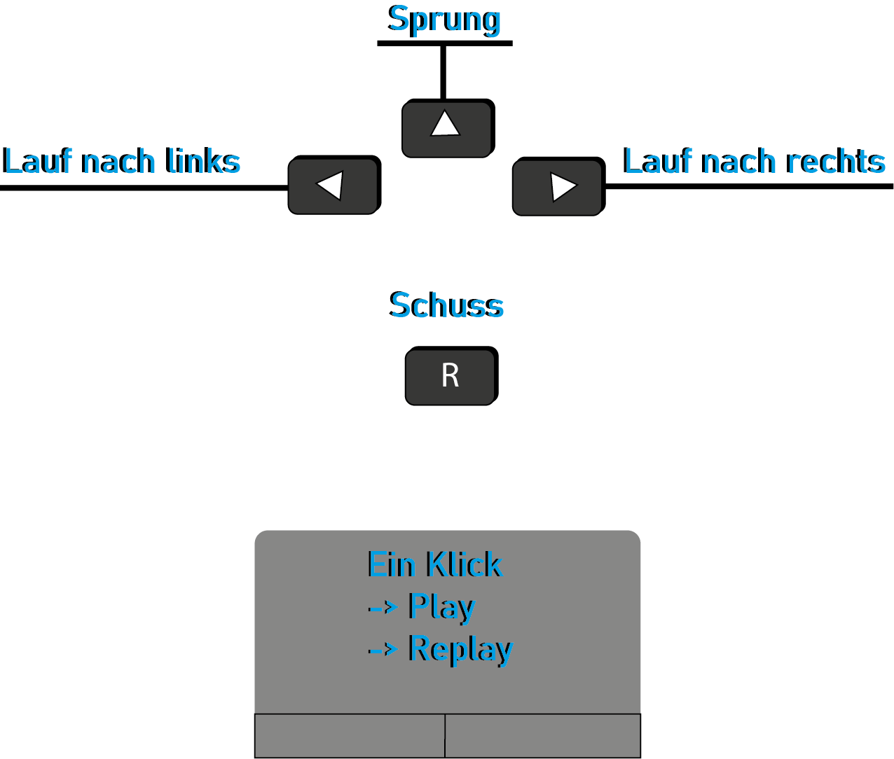

Hochschule Bremen
Inhaltsverzeichnis
Information Architekture
Labeling
Strukturierung/Hierarchie
Games
Idee/Philosophie
Game-Design
Game-Engines
Animation
Keyframe Animation
Kinematische Animation
Sources
Information Architekture
Labeling
Um die Informationen in unserem Portfolio schnell zugänglich zu machen, haben wir uns für diese Art der Labeling entschieden:

Diese Labeling stellt die drei grundlegenden Inhalte unserer Website dar, nämlich ein Portfolio, ein Spiel und schließlich Über Mich. Wenn wir mit dem Mauszeiger über den Tab "Portfolio" gehen, werden Untermenüs angezeigt, die uns die Möglichkeit geben, schnell auf die Themen zuzugreifen, die wir behandeln möchten.
Information Architekture
Strukturierung / Hierarchie
Wenn wir unsere Website öffnen, sehen wir unterhalb der Navigationsleiste zunächst ein Inhaltsverzeichnis. Diese zeigt die Architektur unseres Portfolios, d.h. die Themes und ihre Sub-Themes. Es ist auch möglich, durch einen Klick auf ein gewünschtes Theme weitergeleitet zu werden.
Games
Idee / Philosophie
Die Idee für das Spiel "Zombie Killer" wurde durch die aktuelle Situation in der Welt mit dem Ausbruch des Corona-Virus inspiriert. In unserem Spiel symbolisieren die Zombies den Corona-Virus, der die Bevölkerung gezwungen hat, sich im Falle einer Infektion wochenlang
in ihren Häusern einzuschließen. Die Schlüssel zeigen die
Quarantäne von infizierten Personen an.
Die Schlüssel werden gesammelt, um die Türen zu öffnen und dann die Kranken medizinisch
zu versorgen, um ihr Leben mit den gesammelten Impfstoff zu retten..
Games
Game-Design
Geschichte
Das Konzept des Spiels „Zombie Killer“ handelt von einer apokalyptischen Pandemie, bei der viele Menschen durch einen Virus in Zombies verwandelt wurden. Das Ziel des Spielers im ersten Teil des Spiels ist es, alle Schlüssel zu den Türen zu sammeln, um die Menschen zu befreien, die nicht aus ihren Häusern entkommen konnten. Im zweiten Teil des Spiels werden jedoch alle medizinischen Kits gesammelt, um die befreiten, aber kranken Menschen zu behandeln.
Ziel
Der Grund, weshalb wir auf die Idee gekommen sind, dieses Spiel entwickelt zu haben ist, dass die ganze Menschheit aktuell mit einer Pandemie (Covid-19) zu kämpfen hat. Mit dieser Betrachtung wollten wir eine übertriebene Version einer apokalyptischen Pandemie verursachen und den Spieler trotz Echtzeit Pandemie einen Spaßfaktor in unserem Spiel herbeirufen.
Spiel-Welt
Die Spiel-Welt findet in zwei Variationen statt.
Level 1: Auf der Spiel-Welt vom ersten Level befindet man sich am hellen Tag, an einem Sumpf Gebiet, was sich leicht abgelegen von der Innenstadt befindet.
Im Hintergrund sind noch klar die Gebäude der Stadt zu erkennen, welche durch den Schatten abgedunkelt sind.
An der Ortschaft sind leichte Hügel neben dem Sumpf, an der Sumpf Landschaft wurden die Oberflächen erstellt, an denen sich der Spieler durchkämpfen muss.
Level 2: Im zweiten Teil des Spiels, bleibt die Spiel-Welt fast die gleiche wie im ersten Teil. Es gibt jedoch Änderungen in der Tageszeit, der Farbe der Zombies und der Position der Plattformen. Über die Tageszeit: Es ist Nacht, leuchten die Sterne an einem dunkelblauen Himmel und das Wasser spiegelt die blaue Farbe des Himmels wider. Die Zombies haben eine grüne Farbe.
Steuerung

Fokus
Der Fokus liegt an der Geschwindigkeit, mit der der Spieler Medizinkits oder Schlüssel einsammeln kann, sowie an seiner Wendigkeit und Spontaneität beim Ausweichen vor vom Himmel fallenden Hindernissen.
Spielanleitung
Das Spiel besteht darin, alle Schlüssel und dann die medizinischen Kits im Spiel zu sammeln. Sie müssen das Spiel vor einer bestimmten Zeit beenden oder Sie sterben.
Um zu überleben und das Spiel zu gewinnen, müssen Sie alle riesigen Hindernis ausweichen, die fallen und sich den Zombies stellen, indem Sie die R-Taste auf Ihrer Tastatur drücken, um sie mit Ihrer Waffe zu töten.
Wenn Sie getroffen werden, entweder von einem Zombie oder einem vom Himmel fallenden Hindernis, können Sie je nach Auswirkung 1 bis alle Leben verlieren.
Bemerkung:
Sie können nicht schießen, während Sie springen. Sie müssen sich zum Schießen auf einer Plattform befinden.
Wenn Sie springen, können Sie sich vorwärts und rückwärts bewegen, um einem Hindernis schnell auszuweichen und nicht getroffen zu werden.
Details
Alle grafischen 2D-Charakter unseres Spiels, außer den Plattformen, wurden von stephane mit der Software Inkscape illustriert. In diesem Teil werden wir die wichtigen Charakter unseres Spiels zeigen.
Spieler-Frame
Die Spielerrahmen bestehen aus 20 Zeichen, nämlich Kollision, Springen, Laufen, Stehen und Schießen. Die Anzeige erfolgt in beide Richtungen, d.h. links und rechts.
Gegner-Frame
Die Frames-Gegner bestehen aus 6 Figuren, also 3 auf der linken und 3 auf der rechten Seite. da sie sich nur langsam links/rechts auf der Plattform bewegen.
Schlüssel / medizinische Kits
die Elemente, die gesammelt werden müssen, um das Spiel zu gewinnen. Die Gesamtzahl der Elemente, die vor Ablauf der vorgegebenen Zeit gesammelt werden müssen, beträgt 13. Das Zeitlimit variiert je nach Level und Spiel. Bei Level 1 beträgt die Zeit 15-20 Sekunden und bei Level 2 25-30 Sekunden.
Beachten Sie, dass die Zeit zwischen den oben definierten Intervallen zufällig vergeben wird.
Sound-Effekte
Die Musik und die Soundeffekte wurden von Mehmet mit der Software „SFXR“ und „FT Studio“ erstellt und für das Spiel angepasst.
Die Datei „Musik-Flute“ wurde mit „FL Studio“ erstellt. Die Eigenschaften der Musik-Flow sollte anfangs zur Überlegung nicht so schnell sein, damit man die Musik dem User die Erscheinung gibt, weder schnell spielen zu müssen, noch zu langsam spielen zu müssen.
Da man im Spiel eine gewisse Zeit hat, um das Level zu beenden, sorgt die Musik für dementsprechende Spannung und Aufregung. Die Datei ist außerdem eine .MP3 Datei.
Die Dateien „Kollision_Sound“; „Medikits“; „Schlüssel_Sound“ und „Schuss1“ wurden auf der Software „SFXR“ erstellt. Die oben genannten Soundeffekte sind jeweils 8-Bit wav. Dateien. Die erstellten Audios sind im Verzeichnis „../assets/Audio“ zu finden und hinterlegt.
Die Hauptmusik des Spiels
Die ist im mp3-Format und wird gestartet, wenn Sie auf den Game-Tab klicken, und stoppt erst, wenn Sie die Seite Game verlassen.
Die Musik wird so oft wie möglich wiederholt, indem die Loop-Funktion des „Phaser“-Frameworks auf true gesetzt wird.
Die kollision
Die ist im wav-Format. Jedes Mal, wenn der Spieler mit einem Zombie oder einem Hindernis in Berührung kommt, das auf ihn fällt, wird dieser Soundeffekt ausgelöst.
Der Schuss
Die ist im wav-Format. Dieser Soundeffekt wird jedes Mal ausgelöst, wenn Sie die „R-Taste“ zum Feuern drücken.
Schlüssel oder Kits sammeln
Diese sind im wav-Format. Diese Soundeffekte werden jedes Mal ausgelöst, wenn der Spieler ein aufzunehmendes Objekt durchläuft.
Games
Game-Engines
Als Spiel-Engine haben wir das „Phaser“-Framework gewählt.
Phaser ist ein 2D-Spiele-Framework, das für die Entwicklung von HTML5-Spielen für Desktop und Mobile verwendet wird. Es ist eine freie Software, die von Photon Storm entwickelt wurde.
Phaser verwendet intern sowohl einen Canvas- als auch einen WebGL-Renderer und kann je nach Browserunterstützung automatisch zwischen beiden wechseln. Dies ermöglicht ein schnelles Rendering für Desktop und Mobile. Es verwendet die Pixi.js-Bibliothek für das Rendering.
[1]
Das Spieldesign wurde von Mehmet und Stephane entwickelt. Die Umsetzung des Spiels aber wurde von Stephane übernommen.
Um die Klassen und die Struktur unseres Codes darzustellen, haben wir uns für einen unendlichen Automaten entschieden.
Phaser bietet uns eine Grundstruktur mit 4 Hauptfunktionen, die wir in unserem Spiel verwendet haben.
- Config: Die Config-funktion ist das Herzstück unseres Spiels, da sie wesentliche Attribute wie type, backgroundColor, scale, physics und scene enthält.
Die Config-funktion wird dann als Parameter an den neu erstellten Game Phaser übergeben.
new Phaser.Gamer(config); - Preload: Die Preload-Funktion lädt die Assets in das Spiel. In unserem Code haben wir eine Preloader-Klasse erstellt, die die Preload-Funktion enthält und implementiert. Wir haben die Preloader-Klasse mit der Aufgabe betraut, alle in unserem Programm verwendeten Bilder und Soundeffekte zu laden.
- Create: Die Funktion Create erstellt, wie der Name schon sagt, Assets im Spiel, die in die Funktion Preload, in unserem Fall in die Klasse Preloader, geladen wurden. Die Verbindung zwischen einem geladenen Asset und einem erstellten Asset ist ein Schlüsselwort.
Es ist daher wichtig, immer darauf zu achten, dass die Schlüsselwörter identisch sind.
Jede Klasse in unserem Set enthält die erstellte Funktion. - Update: Die Aktualisierungsfunktion ist diejenige, die die Aktionen jede Millisekunde initialisiert. Ohne diese Funktion wäre es nicht möglich, unser Spiel interaktiv und lebendig zu gestalten.
Um die Lesbarkeit unseres Codes zu verbessern, haben wir Methoden außerhalb der Phaser-Methoden erstellt und sie entsprechend ihrer Funktion umbenannt.
Diese Methoden werden entweder in der Create-Funktion oder in der Update-Funktion aufgerufen.
In der Themenanimation werden wir das Thema weiter vertiefen.
Animation
Keyframe Animation
Eine Reihe von Zeichnungen ist als Einzelbilder miteinander verbunden. Dadurch entsteht die Illusion von Bewegung.
In unserem Code haben wir Methoden erstellt, die die this.anims.create()-Funktionen implementieren und diese dann in die Phaser Create()-Funktion implementieren.
In unserem Spiel haben wir die Schlüsselbilder für den Spieler und für den Gegner verwendet. In den folgenden Zeilen werden wir die Methoden vorstellen, die die Animationsfunktionen implementieren.
Diese Methode erstellt die Laufanimation unseres Players. Wir haben den Bewegungen auf der linken Seite die Frames-Anfang: 7 und Ende: 2 und den Bewegungen auf der rechten Seite die Frames-Anfang: 12 und Ende: 16 zugewiesen. Jedes Mal, wenn dies Key in der Update-Funktion aufgerufen wird, gibt sie eine Reihe von Bildern zurück, die den Laufeffekt erzeugen.
Eine weitere Methode ist playerStand(), die sich von der playerMove()-Methode unterscheidet, da sie nur einen Frame liefert. Die Taste dieses Frames wird aufgerufen, wenn der Spieler die Richtungstaste auf der Tastatur einmal berührt. Wenn der Spieler die linke Richtung berührt, dreht er sich nach links, und wenn es die rechte Richtung ist, dreht er sich nach rechts.
Unser Code enthält etwa 5 Methoden zur Erzeugung von Animationen. Diese sind: this.enemyMove(), this.playerStand(), this.playerMove(), this.playerJump(), this.playerShot(), this.playerTouching().
Dieses Codestück, das sich in der Phaser-Update-Funktion befindet, veranschaulicht die Techniken, mit denen wir die Interaktion mit dem Besucher entwickelt haben, wenn er die R-Taste zum Feuern drückt. Mit einer if-Abfrage prüfen wir zunächst, ob die R-Taste gedrückt wurde und ob sich der Spieler auf dem Boden befindet, denn wie bereits erwähnt, kann der Spieler nur schießen, wenn er sich auf einer Plattform befindet. Dann untersuchen wir die Richtung des Spielers und rufen mit der Funktion ,,anims.play()'' das entsprechende Keyframe auf.
Animation
Kinematische Animation
Um kinematische Animationen mit Phaser durchführen zu können, stellt uns die Phaser ,,Arcade" Klasse Funktionen zur Verfügung, die es uns erlauben, Physik in unser Spiel zu integrieren.
Wie zum Beispiel : collider, overlap, setCollideWorldBounds(true), setVelocityX und setVelocityY um nur einige zu nennen
Die Animation des Schusses wurde nicht durch ein physisches Element der Phaser-Arcade-Klasse ausgeführt. Um dies zu erreichen, sind wir wie folgt vorgegangen:
Mit der Funktion Create von Phaser haben wir unseren Kugel im Spiel erstellt. Wir haben die x- und y-Position des Spielers als Parameter angegeben.
Diese Methode ist in Game2 zu finden. Da wir die Schussanimation nicht mit den Phaser-Funktionen erzeugen konnten, beschlossen wir, unsere eigene Animation zu erstellen. Bei dieser Methode werden wir die 4 Fälle untersuchen:
- Wenn die Taste R gedrückt wird, wird die Variable this.shooting auf true gesetzt, und wenn der Spieler nach rechts schaut, wird der Kugel, die an ihrer Ausgangsposition unsichtbar ist, sichtbar und bewegt sich nach rechts.
- Wir werden dasselbe prüfen wie im ersten Punkt, nur dass hier der Ball nach links geht.
- Dann prüfen wir, ob der Kugel den linken oder rechten Rand unseres Spiels erreicht hat, d.h. wenn die Position unseres Kugels kleiner als -10 oder größer als 1010 ist, wobei wir wissen, dass unser Spiel 1000 Pixel breit ist, dann wird die Variable this.shooting false.
- Wenn der Wert der Variable gleich false ist, dann wird unser Kugel wieder unsichtbar, und sie erhält wieder die x und y Position des Spielers.
Da wir die Funktionen von Physics Arcade nicht zur automatischen Erstellung unserer Kollisionen verwendet haben, haben wir unsere eigenen Kollisionen des Kugels mit jedem der Gegner auf der linken und rechten Seite des Spielers manuell erstellt. Jedes Mal, wenn ein Feind mit einem Spieler kollidiert, verschwindet dieser Spieler aus dem Spiel.
Diese Methode ist in der Klasse Update() implementiert. Wir haben eine Variable index erstellt, die auf 0 initialisiert ist und solange inkrementiert wird, wie die Gesamtzeit noch größer ist als die Restzeit. Dann prüfen wir, ob unser index die gewünschten Werte erreicht hat und erst dann inkrementieren wir die Restzeit des Spielers, natürlich solange der Spieler das Spiel noch nicht gewonnen hat, d.h. alle gewünschten Elemente gesammelt hat.